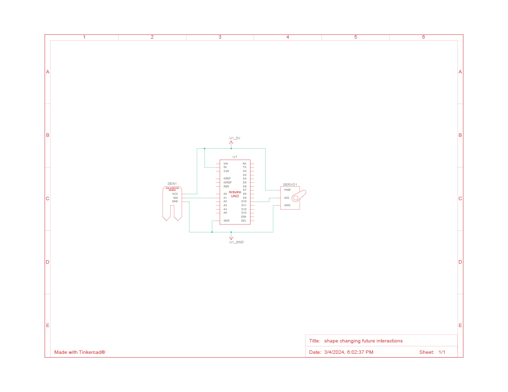
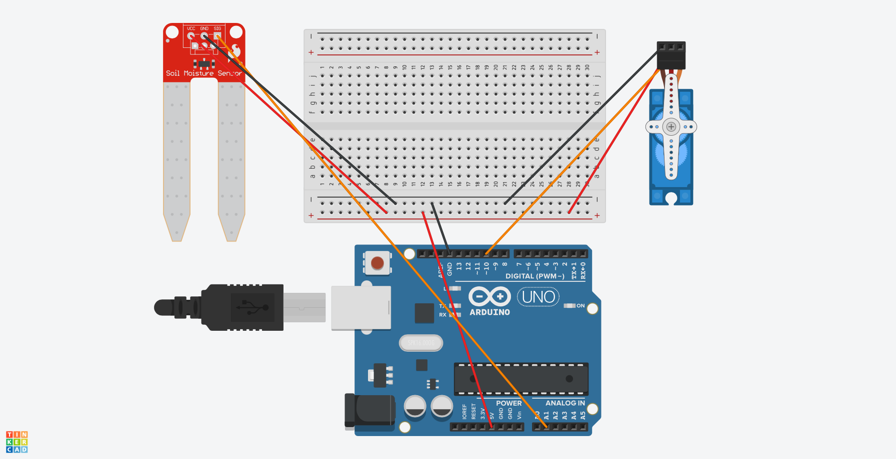

Process
Technical Detail
The mechanism that matters the most in this system is that of the picture. I modeled this shape-changing aspect after the following art piece: https://youtu.be/Vp-oMC8DCPs. I recreated this using 3D printed blocks that were duck taped at the hinges. A string that was connected to one of the blocks and then connected to a small pole attached to a servo motor. The idea was that his string would pull the picture mechanism so that it would essential rotate around a singular stationary block.
The system used a soil moisture sensor to read the moisture level of the soil in the planer. If the dryness level is above a certain threshold, the servo will rotate to the left 180 degrees, pulling the string and causing the picture to move. The inverse is also true, if the dryness level is below a certain threshold, the servo will rotate to the right 180 degree, releasing the string and moving the picture back in place. This threshold can be set by the user to correspond to their specific plant.
circuit diagrams

Visuals
presentation setup